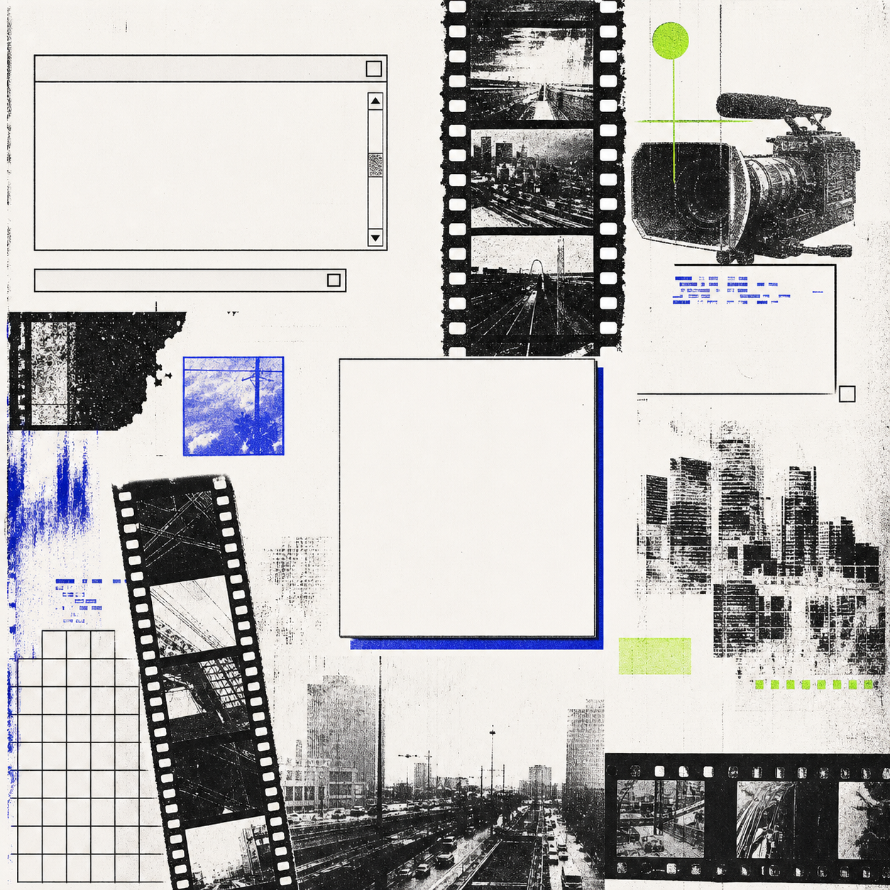
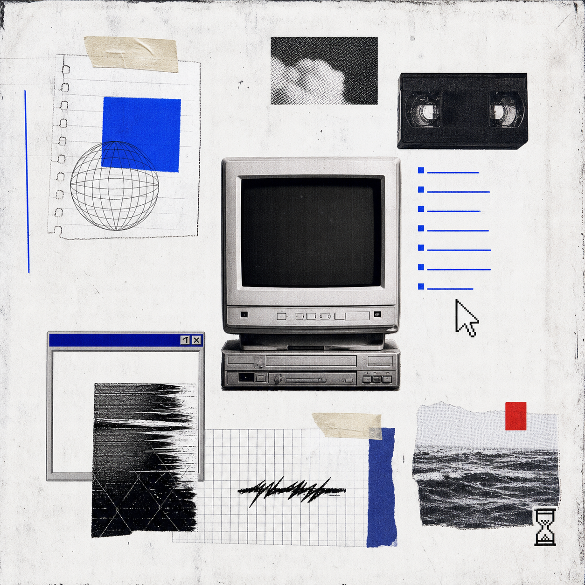

* welcome to my portfolio! :L * all my work is listed here * feel free to browse my videography * my art work * my sound selections *
videography
explore a mindfreak
art works / page objects


* welcome to my portfolio! :L * all my work is listed here * feel free to browse my videography * my art work * my sound selections *
explore a mindfreak

